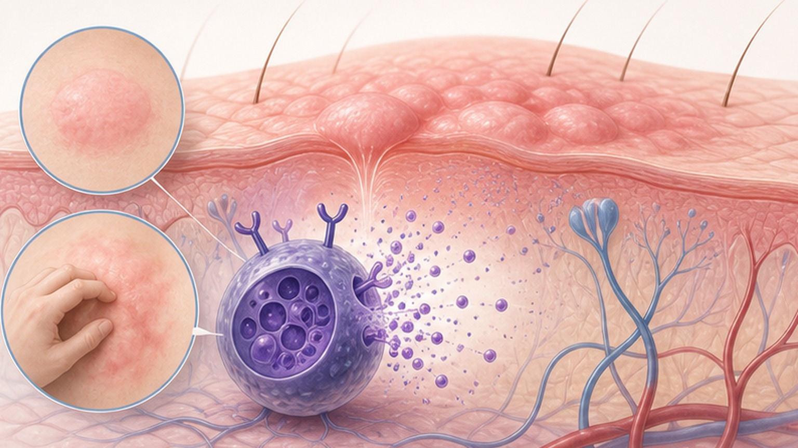
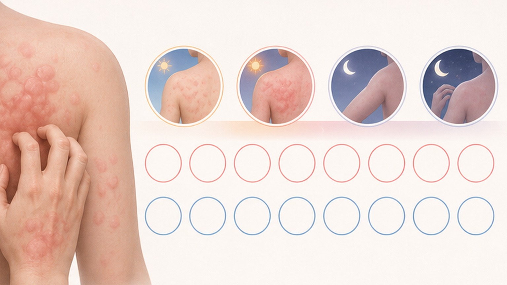
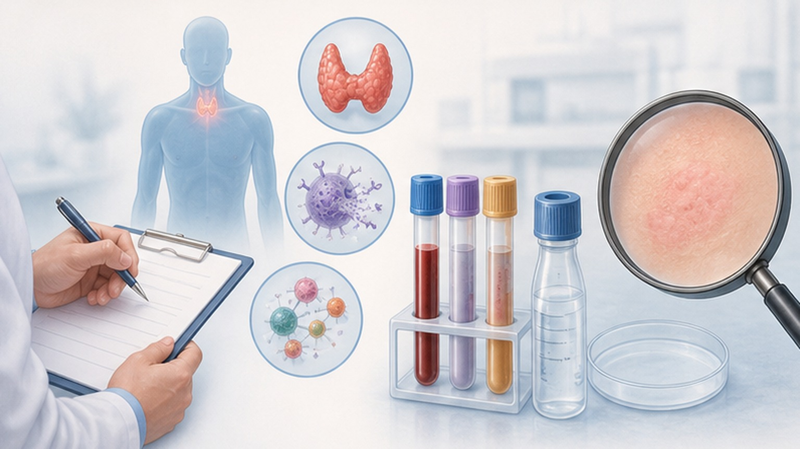
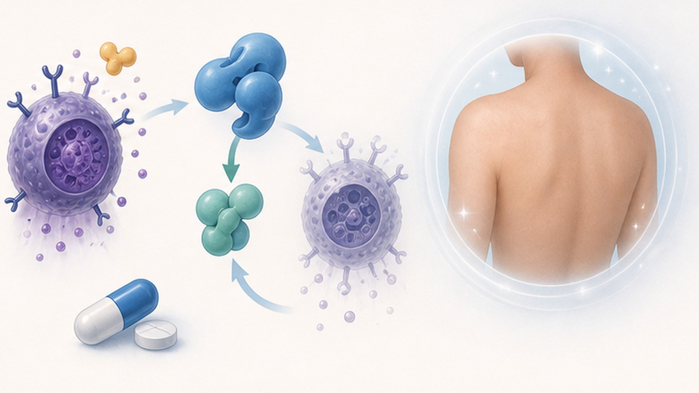

만성두드러기,
꾸준히 관리하면 나아집니다
만성두드러기 (Chronic Urticaria, CU) 의 원인·진단·단계별 치료를 환자 눈높이로 안내합니다
만성두드러기 (Chronic Urticaria, CU) 란
팽진 (wheal) 과 혈관부종 (angioedema) 이 6주 이상 거의 매일 반복되는 상태
갑자기 부풀어 오르는 팽진과 가려움이 6주 넘게 거의 매일 또는 자주 반복된다면 단순 두드러기가 아닌 만성두드러기입니다.
급성 두드러기는 6주 이내에 자연 소실되지만, 만성으로 진행하면 수년간 지속될 수 있습니다. 다만 면역 알레르기 질환이지 전염병이 아니며, 올바른 단계별 치료로 대부분 관해에 도달할 수 있습니다. 첫 단추는 "왜 생기는지"보다 "얼마나 활동적인지"를 객관적으로 평가하는 것입니다.
두 가지 큰 분류 — CSU vs CIndU
자발적으로 생기는 형태와 특정 자극에 의해 유발되는 형태로 나뉩니다
- 특별한 외부 자극 없이 자발적으로 발생
- 전체 만성두드러기의 약 60–80% 차지
- 자가면역 기전이 주된 원인
- Type I — IgE 자가항체 (TPO·IL-24 등)
- Type IIb — IgG 자가항체 (항-FcεRI)
- 오말리주맙 (Omalizumab) 에 좋은 반응
- 특정 물리적·환경적 자극에 의해 유발
- 한랭 두드러기 — 찬 공기·찬물 노출 시
- 피부묘기증 — 피부를 긁거나 압박 시
- 콜린성 두드러기 — 운동·체온 상승 시
- 지연성 압박·일광·진동 두드러기 등
- 유발 검사 (FricTest·ice cube 등) 로 진단
왜 가렵고 부풀어 오르나요
피부 비만세포 (mast cell) 의 탈과립 → 히스타민 방출 → 혈관 확장·투과성 증가
유발인자 → 비만세포 활성화 → 히스타민·류코트리엔 등 매개체 분비 → 혈관 확장·부종 → 팽진·가려움의 4단계 연쇄반응입니다.
CSU 에서는 IgE 자가항체 (Type I) 또는 IgG 자가항체 (Type IIb) 가 비만세포 표면의 FcεRI 수용체를 자극해 자발적 탈과립을 일으킵니다. 따라서 항히스타민제로 히스타민 작용을 차단하거나, 오말리주맙으로 IgE 자체를 중화하는 전략이 효과적입니다. 약을 끊어도 비만세포 안정화에 시간이 걸리므로 꾸준한 복용이 핵심입니다.

함께 올 수 있는 동반 질환
자가면역 갑상선·알레르기·정신건강 영역 — 선별 검사가 권장됩니다
증상 평가 · UAS7 (Urticaria Activity Score)
7일간 매일 팽진 수와 가려움 정도를 0–3점으로 기록 → 합산 점수로 활동도 판정
| 점수 | 팽진 수 (Wheals) | 가려움 정도 (Pruritus) | UAS7 합산 | 활동도 판정 |
|---|---|---|---|---|
| 0 | 없음 | 없음 | 0 – 6 | 잘 조절됨 (Well controlled) |
| 1 | 20개 미만 / 24h | 경도 (Mild) | 7 – 15 | 경증 (Mild) |
| 2 | 20 – 50개 / 24h | 중등도 (Moderate) | 16 – 27 | 중등증 (Moderate) |
| 3 | 50개 초과 / 24h | 심함 (Severe) | 28 – 42 | 중증 (Severe) |

어떤 검사를 받게 되나요
기본 4종 + 필요 시 자가면역·유발성 검사 — 광범위 알레르기 검사는 권고되지 않습니다

단계별 치료 — 4단계 사다리
국제 가이드라인 표준 — 반응 부족 시 2–4주 간격으로 다음 단계로 상승합니다
최신 치료 · 레미브루티닙 (Remibrutinib)
경구 BTK 억제제 — 항히스타민 불응 CSU 환자의 첫 경구 표적 치료 (FDA 2025.9 승인)
25 mg 1일 2회 경구 복용 · 주사 불필요 · 정기 혈액검사 불필요. REMIX-1·2 임상에서 12주 시점 UAS7 유의미한 감소 (p<0.001) 가 확인되었습니다.
BTK (Bruton Tyrosine Kinase) 를 차단해 비만세포의 히스타민 방출을 원천 억제하는 기전적 치료입니다. 약 50% 환자에서 UAS7 ≤ 6 (질병 조절) 에 도달하고, 약 1/3 에서 완전 관해 (UAS7 = 0) 가 보고되었습니다. 2주째부터 빠른 효과가 나타나고 52주까지 효능이 유지되며, 주요 이상반응은 비인두염·두통 정도로 대부분 경미합니다. 오말리주맙 외 첫 경구 대안으로 자리매김했습니다.

집에서의 자가 관리법
피해야 할 NSAIDs·알코올·뜨거운 자극을 알면 악화를 막을 수 있습니다
- 매일 7–8시간 규칙적 수면 유지
- 스트레스 관리 — 명상·심호흡·가벼운 산책
- 매일 무향 보습제로 피부 건조 방지
- 두드러기 일지 작성 — 악화 요인 파악
- 해열·진통은 타이레놀 (아세트아미노펜)
- 처방약은 임의 중단 없이 꾸준히 복용
- NSAIDs · 아스피린 · 이부프로펜 복용
- 알코올 (과음은 두드러기를 악화시킴)
- 뜨거운 목욕 · 사우나 (체온 상승 자극)
- 꽉 끼는 옷 · 압박 자극 (CIndU 유발)
- 증상 호전됐다고 약 임의 중단
- 광범위 식이 제한 (효과 근거 부족)
두드러기와 다른 신호 — 즉시 119
아래는 단순 두드러기가 아닌 아나필락시스 (Anaphylaxis) 의 적신호입니다
꾸준한 관리로
두드러기에서 벗어날 수 있습니다
평균 2–5년 내 자연 관해되는 분이 많습니다 — 단계별 치료를 함께 결정하겠습니다
광교중앙로 298, 4층
토요일 08:30~13:30
같은 자료를 다시 볼 수 있어요